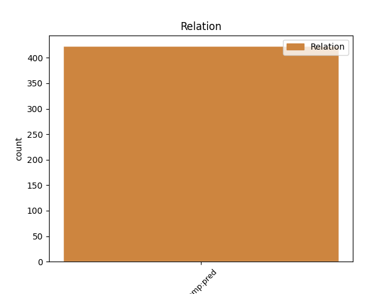
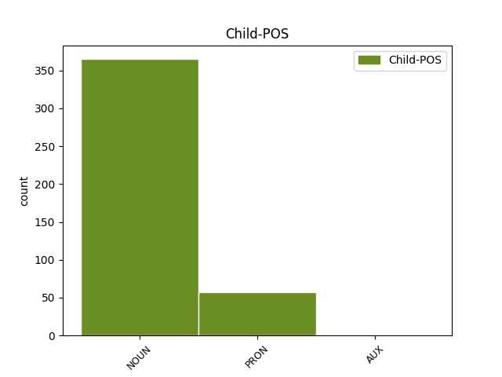

Distribution of features within this leaf



Agreement Rules sorted by frequency.
- When the dependent token is the predicative complements(comp:pred) of the head token, and the dependent token is NOUN.
1 Սերժ _ _ _ _ 0 _ _ _
2 Սարգսյանը _ _ _ _ 0 _ _ _
3 քարոզարշավից _ _ _ _ 0 _ _ _
4 առաջ _ _ _ _ 0 _ _ _
5 հայտարարել _ _ _ _ 0 _ _ _
6 է _ _ _ _ 0 _ _ _
7 , _ _ _ _ 0 _ _ _
8 որ _ _ _ _ 0 _ _ _
9 իշխանության _ _ _ _ 0 _ _ _
10 խնդիրն խնդիր NOUN _ Animacy=Nhum|Case=Nom|Definite=Def|Number=Sing 11 comp:pred _ LTranslit=xndir|Translit=xndirn
11 է եմ AUX _ Aspect=Imp|Mood=Ind|Number=Sing|Person=3|Polarity=Pos|Tense=Pres|VerbForm=Fin 0 _ _ _
12 առանց _ _ _ _ 0 _ _ _
13 ցնցումների _ _ _ _ 0 _ _ _
14 նախընտրական _ _ _ _ 0 _ _ _
15 գործընթաց _ _ _ _ 0 _ _ _
16 ապահովել _ _ _ _ 0 _ _ _
17 : _ _ _ _ 0 _ _ _
1 Հարցը _ _ _ _ 0 _ _ _
2 միայն _ _ _ _ 0 _ _ _
3 այն այն PRON _ Distance=Dist|Number=Sing|PronType=Dem 4 comp:pred _ LTranslit=ayn|Translit=ayn
4 է եմ AUX _ Aspect=Imp|Mood=Ind|Number=Sing|Person=3|Polarity=Pos|Tense=Pres|VerbForm=Fin 0 _ _ _
5 , _ _ _ _ 0 _ _ _
6 թե _ _ _ _ 0 _ _ _
7 արդյոք _ _ _ _ 0 _ _ _
8 ընտրություններից _ _ _ _ 0 _ _ _
9 հետո _ _ _ _ 0 _ _ _
10 տեխնոկրատները _ _ _ _ 0 _ _ _
11 պետք _ _ _ _ 0 _ _ _
12 են _ _ _ _ 0 _ _ _
13 լինելու _ _ _ _ 0 _ _ _
14 Կարեն _ _ _ _ 0 _ _ _
15 Կարապետյանին _ _ _ _ 0 _ _ _
16 : _ _ _ _ 0 _ _ _
1 Ակաթի _ _ _ _ 0 _ _ _
2 հայրն _ _ _ _ 0 _ _ _
3 աղջկա _ _ _ _ 0 _ _ _
4 փորը _ _ _ _ 0 _ _ _
5 կլորանալուց _ _ _ _ 0 _ _ _
6 հետո _ _ _ _ 0 _ _ _
7 նրանից _ _ _ _ 0 _ _ _
8 երես _ _ _ _ 0 _ _ _
9 էր _ _ _ _ 0 _ _ _
10 թեքել _ _ _ _ 0 _ _ _
11 , _ _ _ _ 0 _ _ _
12 ոչ _ _ _ _ 0 _ _ _
13 տեսնել _ _ _ _ 0 _ _ _
14 էր _ _ _ _ 0 _ _ _
15 ուզում _ _ _ _ 0 _ _ _
16 , _ _ _ _ 0 _ _ _
17 ոչ _ _ _ _ 0 _ _ _
18 խոսել _ _ _ _ 0 _ _ _
19 , _ _ _ _ 0 _ _ _
20 իսկ _ _ _ _ 0 _ _ _
21 երբ _ _ _ _ 0 _ _ _
22 իմացավ _ _ _ _ 0 _ _ _
23 , _ _ _ _ 0 _ _ _
24 որ _ _ _ _ 0 _ _ _
25 աղջիկ _ _ _ _ 0 _ _ _
26 է _ _ _ _ 0 _ _ _
27 ծնվել _ _ _ _ 0 _ _ _
28 ՝ _ _ _ _ 0 _ _ _
29 « _ _ _ _ 0 _ _ _
30 իրա _ _ _ _ 0 _ _ _
31 նման _ _ _ _ 0 _ _ _
32 լիրբ _ _ _ _ 0 _ _ _
33 պիտի _ _ _ _ 0 _ _ _
34 լինի _ _ _ _ 0 _ _ _
35 , _ _ _ _ 0 _ _ _
36 էլի _ _ _ _ 0 _ _ _
37 » _ _ _ _ 0 _ _ _
38 ասաց _ _ _ _ 0 _ _ _
39 , _ _ _ _ 0 _ _ _
40 ու _ _ _ _ 0 _ _ _
41 կնոջը _ _ _ _ 0 _ _ _
42 պատվիրեց _ _ _ _ 0 _ _ _
43 . _ _ _ _ 0 _ _ _
44 « _ _ _ _ 0 _ _ _
45 Մեր _ _ _ _ 0 _ _ _
46 տուն _ _ _ _ 0 _ _ _
47 էլ _ _ _ _ 0 _ _ _
48 չմտնի _ _ _ _ 0 _ _ _
49 , _ _ _ _ 0 _ _ _
50 բնակարան _ _ _ _ 0 _ _ _
51 վարձիր _ _ _ _ 0 _ _ _
52 , _ _ _ _ 0 _ _ _
53 թող _ _ _ _ 0 _ _ _
54 գնա _ _ _ _ 0 _ _ _
55 իր _ _ _ _ 0 _ _ _
56 համար _ _ _ _ 0 _ _ _
57 ոնց _ _ _ _ 0 _ _ _
58 ուզում _ _ _ _ 0 _ _ _
59 է եմ AUX _ Aspect=Imp|Mood=Ind|Number=Sing|Person=3|Polarity=Pos|Tense=Pres|VerbForm=Fin 60 comp:pred _ LTranslit=em|Translit=ē
60 ապրի ապրել VERB _ Aspect=Prosp|Mood=Sub|Number=Sing|Person=3|Polarity=Pos|Subcat=Intr|Tense=Pres|VerbForm=Fin|Voice=Mid 0 _ _ _
61 » _ _ _ _ 0 _ _ _
62 , _ _ _ _ 0 _ _ _
63 — _ _ _ _ 0 _ _ _
64 ասաց _ _ _ _ 0 _ _ _
65 , _ _ _ _ 0 _ _ _
66 իսկ _ _ _ _ 0 _ _ _
67 մտքում _ _ _ _ 0 _ _ _
68 ՝ _ _ _ _ 0 _ _ _
69 « _ _ _ _ 0 _ _ _
70 Կապույտ _ _ _ _ 0 _ _ _
71 աղջիկ _ _ _ _ 0 _ _ _
72 , _ _ _ _ 0 _ _ _
73 ակաթի _ _ _ _ 0 _ _ _
74 ... _ _ _ _ 0 _ _ _
75 » _ _ _ _ 0 _ _ _
76 ։ _ _ _ _ 0 _ _ _
Disagree Examples:
1 Մտածում _ _ _ _ 0 _ _ _
2 եմ _ _ _ _ 0 _ _ _
3 ՝ _ _ _ _ 0 _ _ _
4 Ադամի _ _ _ _ 0 _ _ _
5 ու _ _ _ _ 0 _ _ _
6 Եվայի _ _ _ _ 0 _ _ _
7 վտարումը _ _ _ _ 0 _ _ _
8 Եդեմական _ _ _ _ 0 _ _ _
9 այգուց _ _ _ _ 0 _ _ _
10 ( _ _ _ _ 0 _ _ _
11 դրախտից _ _ _ _ 0 _ _ _
12 ) _ _ _ _ 0 _ _ _
13 , _ _ _ _ 0 _ _ _
14 նրանց _ _ _ _ 0 _ _ _
15 տեղափոխումն _ _ _ _ 0 _ _ _
16 այլ _ _ _ _ 0 _ _ _
17 վայր _ _ _ _ 0 _ _ _
18 , _ _ _ _ 0 _ _ _
19 ուր _ _ _ _ 0 _ _ _
20 շրջակայքն _ _ _ _ 0 _ _ _
21 այլևս _ _ _ _ 0 _ _ _
22 բարեկամական _ _ _ _ 0 _ _ _
23 չէր _ _ _ _ 0 _ _ _
24 , _ _ _ _ 0 _ _ _
25 այլ _ _ _ _ 0 _ _ _
26 խիստ _ _ _ _ 0 _ _ _
27 թշնամական _ _ _ _ 0 _ _ _
28 , _ _ _ _ 0 _ _ _
29 ուր _ _ _ _ 0 _ _ _
30 իրենց _ _ _ _ 0 _ _ _
31 հացը _ _ _ _ 0 _ _ _
32 պիտի _ _ _ _ 0 _ _ _
33 տանջանքով _ _ _ _ 0 _ _ _
34 վաստակեին _ _ _ _ 0 _ _ _
35 , _ _ _ _ 0 _ _ _
36 նույն _ _ _ _ 0 _ _ _
37 մոլորակի _ _ _ _ 0 _ _ _
38 սահմաններում սահման NOUN _ Animacy=Nhum|Case=Loc|Definite=Ind|Number=Plur 39 comp:pred _ LTranslit=sahman|Translit=sahmannerowm
39 չէր եմ AUX _ Aspect=Imp|Mood=Ind|Number=Sing|Person=3|Polarity=Neg|Tense=Imp|VerbForm=Fin 0 _ _ _
40 , _ _ _ _ 0 _ _ _
41 որ _ _ _ _ 0 _ _ _
42 կատարվեց _ _ _ _ 0 _ _ _
43 : _ _ _ _ 0 _ _ _
1 Մի _ _ _ _ 0 _ _ _
2 խոսքով _ _ _ _ 0 _ _ _
3 ՝ _ _ _ _ 0 _ _ _
4 մենք _ _ _ _ 0 _ _ _
5 դրա _ _ _ _ 0 _ _ _
6 հետ _ _ _ _ 0 _ _ _
7 էլ _ _ _ _ 0 _ _ _
8 գործ _ _ _ _ 0 _ _ _
9 չունենք _ _ _ _ 0 _ _ _
10 , _ _ _ _ 0 _ _ _
11 մերը մեր PRON _ Case=Nom|Definite=Def|Number=Plur|Person=1|Poss=Yes|PronType=Prs 12 comp:pred _ LTranslit=mer|Translit=merë
12 չէ եմ AUX _ Aspect=Imp|Mood=Ind|Number=Sing|Person=3|Polarity=Neg|Tense=Pres|VerbForm=Fin 0 _ _ _
13 այլևս _ _ _ _ 0 _ _ _
14 , _ _ _ _ 0 _ _ _
15 մերը _ _ _ _ 0 _ _ _
16 սա _ _ _ _ 0 _ _ _
17 է _ _ _ _ 0 _ _ _
18 ՝ _ _ _ _ 0 _ _ _
19 դժոխքը _ _ _ _ 0 _ _ _
20 , _ _ _ _ 0 _ _ _
21 որը _ _ _ _ 0 _ _ _
22 , _ _ _ _ 0 _ _ _
23 սակայն _ _ _ _ 0 _ _ _
24 , _ _ _ _ 0 _ _ _
25 հասցրել _ _ _ _ 0 _ _ _
26 ենք _ _ _ _ 0 _ _ _
27 սիրել _ _ _ _ 0 _ _ _
28 . _ _ _ _ 0 _ _ _
29 դեհ _ _ _ _ 0 _ _ _
30 , _ _ _ _ 0 _ _ _
31 շանը _ _ _ _ 0 _ _ _
32 որտեղ _ _ _ _ 0 _ _ _
33 էլ _ _ _ _ 0 _ _ _
34 կապես _ _ _ _ 0 _ _ _
35 , _ _ _ _ 0 _ _ _
36 կապվում _ _ _ _ 0 _ _ _
37 - _ _ _ _ 0 _ _ _
38 ընտելանում _ _ _ _ 0 _ _ _
39 - _ _ _ _ 0 _ _ _
40 սիրում _ _ _ _ 0 _ _ _
41 է _ _ _ _ 0 _ _ _
42 ։ _ _ _ _ 0 _ _ _
1 Ի _ _ _ _ 0 _ _ _
2 սկզբանե _ _ _ _ 0 _ _ _
3 մեր _ _ _ _ 0 _ _ _
4 ուշքումիտքն _ _ _ _ 0 _ _ _
5 ինքնապահպանումն ինքնապահպանում NOUN _ Animacy=Nhum|Case=Nom|Definite=Def|Number=Coll 6 comp:pred _ LTranslit=ink’napahpanowm|Translit=ink’napahpanowmn
6 էր եմ AUX _ Aspect=Imp|Mood=Ind|Number=Sing|Person=3|Polarity=Pos|Tense=Imp|VerbForm=Fin 0 _ _ _
7 , _ _ _ _ 0 _ _ _
8 ստամոքսը _ _ _ _ 0 _ _ _
9 լցնելը _ _ _ _ 0 _ _ _
10 , _ _ _ _ 0 _ _ _
11 էդ _ _ _ _ 0 _ _ _
12 հետո _ _ _ _ 0 _ _ _
13 , _ _ _ _ 0 _ _ _
14 երբ _ _ _ _ 0 _ _ _
15 անտառից _ _ _ _ 0 _ _ _
16 փախանք _ _ _ _ 0 _ _ _
17 , _ _ _ _ 0 _ _ _
18 քաղաքակրթություն _ _ _ _ 0 _ _ _
19 ստեղծեցինք _ _ _ _ 0 _ _ _
20 , _ _ _ _ 0 _ _ _
21 ազատ _ _ _ _ 0 _ _ _
22 ու _ _ _ _ 0 _ _ _
23 համեմատաբար _ _ _ _ 0 _ _ _
24 անվտանգ _ _ _ _ 0 _ _ _
25 ժամանակ _ _ _ _ 0 _ _ _
26 ունեցանք _ _ _ _ 0 _ _ _
27 ուրիշ _ _ _ _ 0 _ _ _
28 , _ _ _ _ 0 _ _ _
29 անտագնապ _ _ _ _ 0 _ _ _
30 աչքով _ _ _ _ 0 _ _ _
31 մեր _ _ _ _ 0 _ _ _
32 շուրջը _ _ _ _ 0 _ _ _
33 նայելու _ _ _ _ 0 _ _ _
34 : _ _ _ _ 0 _ _ _
1 Ես _ _ _ _ 0 _ _ _
2 օղին _ _ _ _ 0 _ _ _
3 եմ _ _ _ _ 0 _ _ _
4 , _ _ _ _ 0 _ _ _
5 ես _ _ _ _ 0 _ _ _
6 սիգարետն _ _ _ _ 0 _ _ _
7 եմ _ _ _ _ 0 _ _ _
8 , _ _ _ _ 0 _ _ _
9 ես _ _ _ _ 0 _ _ _
10 մորֆին _ _ _ _ 0 _ _ _
11 ու _ _ _ _ 0 _ _ _
12 կոկայինը _ _ _ _ 0 _ _ _
13 , _ _ _ _ 0 _ _ _
14 ես _ _ _ _ 0 _ _ _
15 թղթախաղը _ _ _ _ 0 _ _ _
16 , _ _ _ _ 0 _ _ _
17 ես _ _ _ _ 0 _ _ _
18 , _ _ _ _ 0 _ _ _
19 շշշը _ _ _ _ 0 _ _ _
20 ՜ _ _ _ _ 0 _ _ _
21 , _ _ _ _ 0 _ _ _
22 ես _ _ _ _ 0 _ _ _
23 սսեքսսն սեքս NOUN _ Animacy=Nhum|Case=Nom|Definite=Def|Number=Coll|Style=Expr 24 comp:pred _ LTranslit=sek’s|Translit=ssek’ssn
24 եմ եմ AUX _ Aspect=Imp|Mood=Ind|Number=Sing|Person=1|Polarity=Pos|Tense=Pres|VerbForm=Fin 0 _ _ _
25 ... _ _ _ _ 0 _ _ _
1 Կան _ _ _ _ 0 _ _ _
2 , _ _ _ _ 0 _ _ _
3 անշուշտ _ _ _ _ 0 _ _ _
4 , _ _ _ _ 0 _ _ _
5 ոմանք _ _ _ _ 0 _ _ _
6 , _ _ _ _ 0 _ _ _
7 քչերը _ _ _ _ 0 _ _ _
8 , _ _ _ _ 0 _ _ _
9 բացառիկներ _ _ _ _ 0 _ _ _
10 կամ _ _ _ _ 0 _ _ _
11 հոգեկան _ _ _ _ 0 _ _ _
12 հիվանդներ _ _ _ _ 0 _ _ _
13 , _ _ _ _ 0 _ _ _
14 որ _ _ _ _ 0 _ _ _
15 ժամանակ _ _ _ _ 0 _ _ _
16 առ _ _ _ _ 0 _ _ _
17 ժամանակ _ _ _ _ 0 _ _ _
18 ըմբոստանում _ _ _ _ 0 _ _ _
19 են _ _ _ _ 0 _ _ _
20 , _ _ _ _ 0 _ _ _
21 հրաժարվում _ _ _ _ 0 _ _ _
22 , _ _ _ _ 0 _ _ _
23 իբր _ _ _ _ 0 _ _ _
24 ՝ _ _ _ _ 0 _ _ _
25 ես _ _ _ _ 0 _ _ _
26 չեմ _ _ _ _ 0 _ _ _
27 որսվում _ _ _ _ 0 _ _ _
28 , _ _ _ _ 0 _ _ _
29 ես _ _ _ _ 0 _ _ _
30 ձեզնից դուք PRON _ Case=Abl|Number=Plur|Person=2|Polite=Infm|PronType=Prs 31 comp:pred _ LTranslit=dowk’|Translit=jeznic’
31 չեմ եմ AUX _ Aspect=Imp|Mood=Ind|Number=Sing|Person=1|Polarity=Neg|Tense=Pres|VerbForm=Fin 0 _ _ _
32 , _ _ _ _ 0 _ _ _
33 ես _ _ _ _ 0 _ _ _
34 ուրիշ _ _ _ _ 0 _ _ _
35 եմ _ _ _ _ 0 _ _ _
36 ։ _ _ _ _ 0 _ _ _